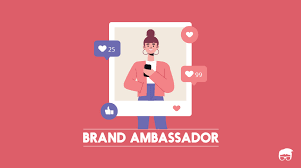
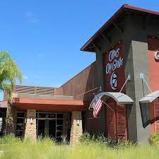
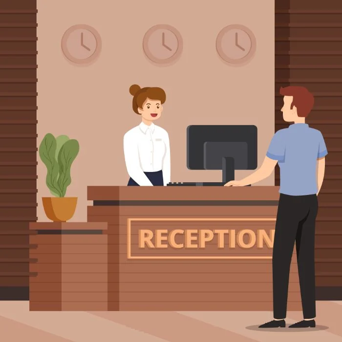
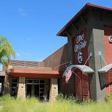
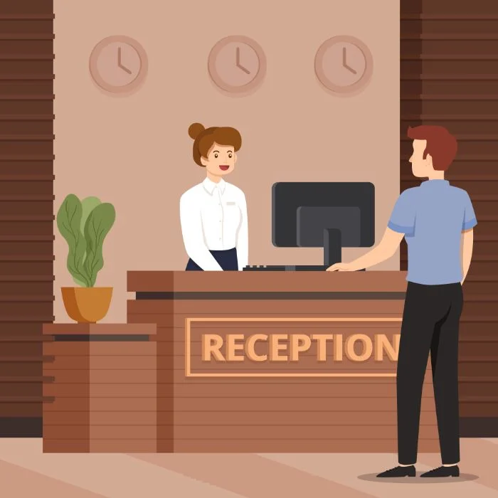

Krystian Allen
My name is Krystian Allen. I am a senior at University of California, Riverside studying the field of Sociology. Everyone can agree that I am a great worker and student and that I am on top of my school work, but also make plenty of time for friends and family. My favorite subjects are sociology and psychology, but I also have a passion for trying new things, hence taking classes outside of my major. I am going to enter the field of therapy because my goal is to study the minds and behavior of not only individuals but also society to ultimately reach the goal of aiding people in their struggles throughout life. I can say that I am a responsible, dedicated, and hard-working student. Moreover, being a sociable person, I have many friends since I like to communicate with people not only from high school/college, but my jobs outside of school and get to know new interesting individuals. I enjoy my time at school: it is really nice to study with classmates, the students are very academically smart, friendly and eager to help. I feared that juggling two jobs and school I would never find time to be happy but, the atmosphere cannot but make me want to go there every time. I like to receive and deal with challenging tasks I am given. I am a very enthusiastic student and worker and I think this is a strong point of mine. My friends and family say that I am a very unique, sociable, and interesting girl with a good sense of humor. As soon as I meet new people who are happy to meet me, I feel extremely comfortable with them. I would say this is why I am able to make new connections and maintain jobs in the service industry, retail, and therapy business. I believe that friendship and connections are one of the most important values in human life. We exchange new ideas, find many interesting things about each other and experience new things. I appreciate friendship and people who surround me. Meeting new people who support all my efforts to grow and develop my skills not only in the subjects but also in my hobbies gives me a lot of energy. Many of those friends who surround me now I met on the street while doing my hobby. I find joy in exercising, hanging out with friends, going to the beach and so many other things. And because of my dedication to maintaining two jobs and school the thing I love doing so much became even more enjoyable. I am able to enjoy every moment I get with my loved ones and go to the beach because it is not something I am able to do like I once was. I feel happiness inside hearing the ways crash or hearing stories from my friends and family because I cherish those moments deeply. Don't get me wrong, I love both of my jobs and school because it is a step closer to the future I strive for and I get to meet so many new and unique individuals I would have never gotten the pleasure to meet through these jobs and school.
The goal I’m currently striving for is to make this world a better place to live in by starting the changes with myself. Sure, I’ve had bad experiences in my life too, but this is exactly what made me the way I am now: grateful, full of love, with a desire to study well because it will help me become a successful person in future and have a high quality of life. I believe that it is manifesting day by day and I feel even more responsibility for what I do and where I go. With all I already have, I know that I’m on the right path and I will do my best to inspire others to live the way they feel like living as well. In saying this I've had plenty of experience in the service, retail, and medical field that has aided me in becoming the person I am today. As a server and hostess at a restaurant I managed the front of the house as well as greeted over 85% of the customers that came in during my shift. I was responsible for making and canceling 50% of the company's reservations over the phone and in person. I sat and greeted the majority of guests that came in during my shifts. I was also responsible for cleaning the restrooms every 15 minutes, disinfecting the menus as soon as they were brought to me, and wiping down windows every night. If the servers, bussers, or dishwashers were busy I would occasionally help bus tables. I've also had the pleasure of being a student leader at a Church. Those duties included greeting and checking out over 50 parents each shift. I also supervised over 40 four year olds with the help of the lead teacher. I performed cleaning duties during and at the end of my shift to make sure the children's area was always sanitized and clean. And lastly I provided care to children with disabilities and special needs which is something I hope to do in the future. This leads me to my next area of experience. I am currently a behavioral therapist. As a behavioral therapist I take on children with autism to better their interactions in social settings, meaning they have goals their parents have set out for them that I help them achieve. This job is very rewarding as whenever a child closes out a job I feel extreme happiness for them as they had been working on that goal for a while. With this job, it has shown me the importance of organization and patience. In a job like this patience is crucial as the kids I work with require special care and help because while they are human they function at a different speed than those not on the spectrum. I am thankful for this job opportunity because it has shown my different perspectives of this world, and how unique and beautiful these children's minds are. It has also been a key factor in making my decision of what field of sociology/psychology I want to pursue when I get older.
Most importantly, in the past I was extremely comfortable with people whom I knew, so that the information being conveyed will be interpreted easily. While studying or participating in any activities, I would try to focus so that my concentration is towards the things that I’m doing. In having these multiple jobs and being enrolled at UCR I have learned that, that is not me. I enjoy hanging out and meeting new people, posting on social media, and talking to new people. My hobbies are basically hanging out with friends, exercising, studying, working, and many more things that fascinate me. I try to give my best in all the activities, work, and clubs that I participate in. Moreover, I believe that all the activities require complete focus and dedication in order to gain knowledge and develop essential skills. I dislike or have fear of certain things like not knowing how to complete tasks or even things like being wrong but because I overcame that shell I've learned that it's okay to be wrong and it's okay to ask questions and for help. I have a lot of belief in dreaming big and setting goals for myself. There are many things that I would like to achieve and do systematically in life. It includes taking care of my parents, siblings, and people around me. The most important thing is to dedicate myself to the service of others. There is nothing more satisfying than helping others. Therefore, I have to educate myself really well on things that I want to do which is why I study sociology, and psychology. Apart from this, I am keen on learning new things each and every day. While learning, I pay attention to developing important skills such as critical thinking, problem-solving, decision making, analytical and communication skills. Moreover, I sometimes lack punctuality and while I do like to do things on time, certain tasks get ahead of me. I am extremely friendly to all the people around me which makes me a happy person. There is a sense of happiness in spending time with friends. This also gives an opportunity to be part of their lives. We all hang out together and eat delicious food prepared at home or sometimes visit restaurants. Occasionally, we go for a picnic or tour with friends and family members. I am fortunate enough to see beautiful places and learn new things from there. Besides this, I like to do crafts activities at home. This will enhance my creativity and imagination to do and be something better in the future. Being able to express my feelings at times is difficult but because of my role as a therapist I must practice what I preach and because of this I have been able to mature mentally and gain insight on myself that I would have been able to before. Because of all of my experience I believe I am an extremely dedicated, tech savvy, diligent, and efficient leader. I possess skills most companies look for and I hope in the future my accomplishments only get greater through networking and from the help of my family and friends as we continue to navigate through life together.
Experience
Hollister
• Sign guests up for Club Cali rewards program w/ a 98% average
• Greet and check out over 50 guests at the cash and wrap
• Fold clothes 75% of time during shift
Citrus City Grille
• Managed front of the house, greeting over 85% of the customers
• Making and canceling 50% of the companies reservations over the phone
Toms Inside Out Painting
• Answer 85% of the companies phone calls
• Input payroll every other Tuesday
• Scanned and filed 100% of every new customer
• Order all of the supplies for the team
Education
Norco College
University of California Riverside
Portfolio




 